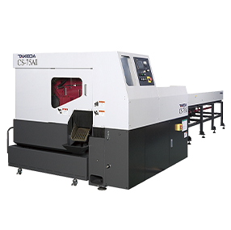

전자동 고속 원형톱기계
플로팅 고속 그립퍼 채택을 통해 전체적인 가공시간 단축과 품질의 안정화 및 고속절단과 흠집방지 최적화
전자동 고속 파이프 절단기
간단한 소재 입력으로 바이스 압조절등과 같은 모든 최적화된 절단환견이 자동으로 셋팅
기타 원형톱기계
양방향 집게, 톱질 시 버가 없고, 분진이 없으며 고정밀 가능
평철 (FLAT STEEL) 절단기
견고한 본체바디와 안정된 톱날 진행방식으로 절단시 진동최소화 또한 이로 인한 톱날 수명 극대화
전자동 더블컷 Tube 절단기
기계관리에 용이하도록 설계된 커버 및 간단한 조작으로 셋팅이 가능한 터치판넬 장착
밴드쏘
대형 갠트리 자동톱기계 고경도로 대형소재 절단에 매우 적합